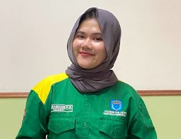
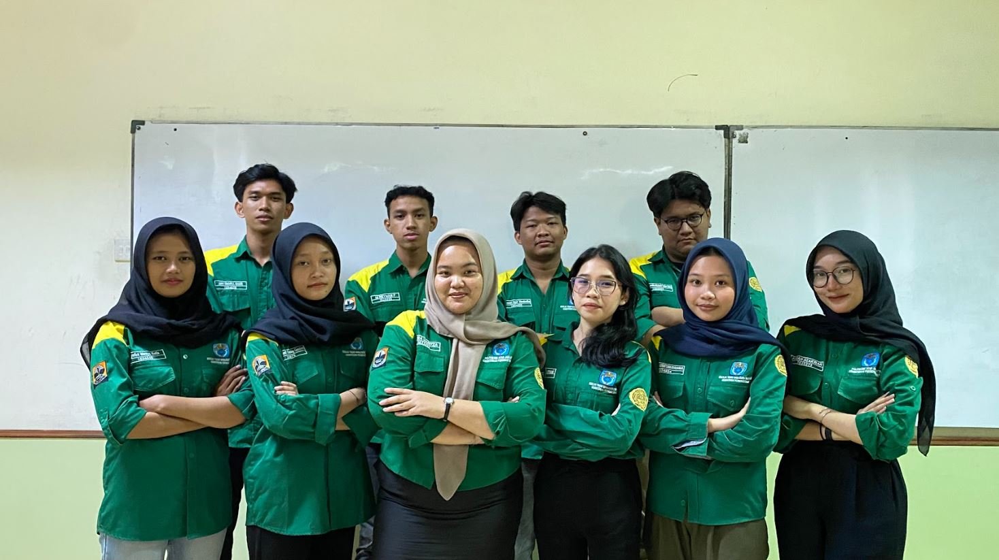
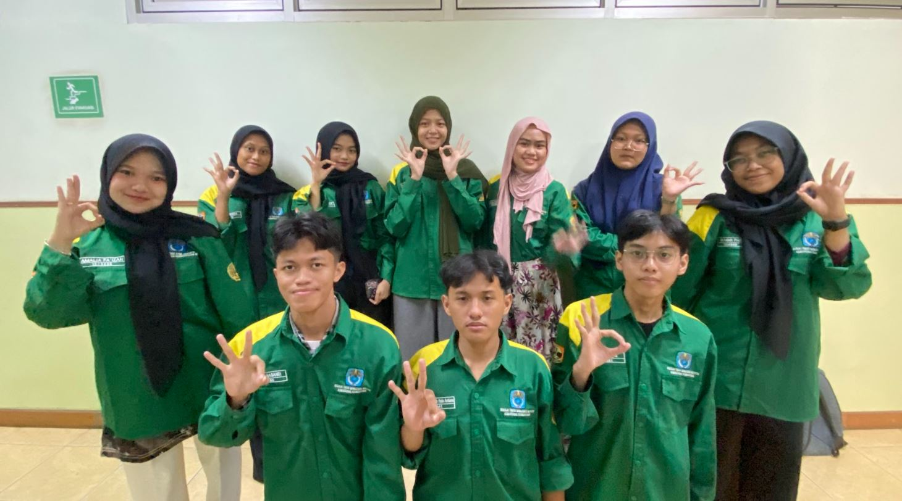
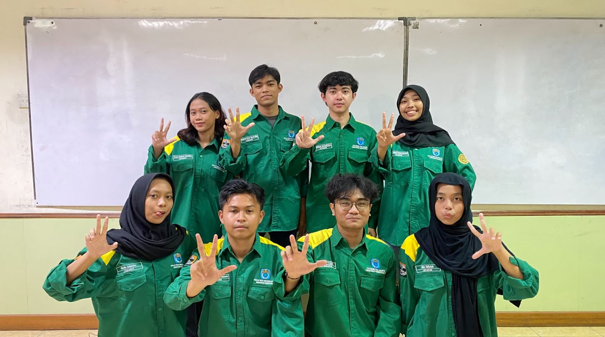
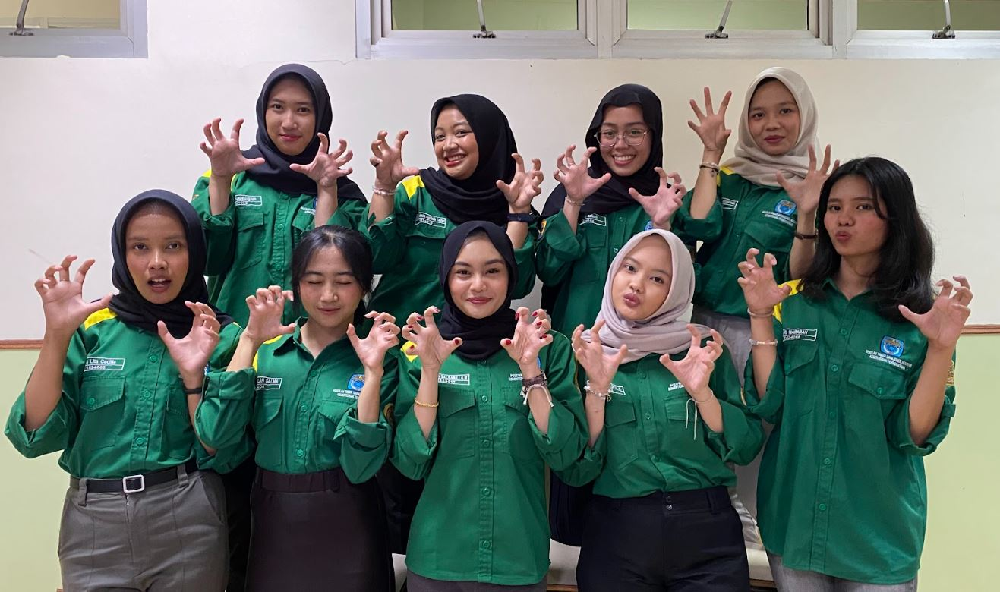
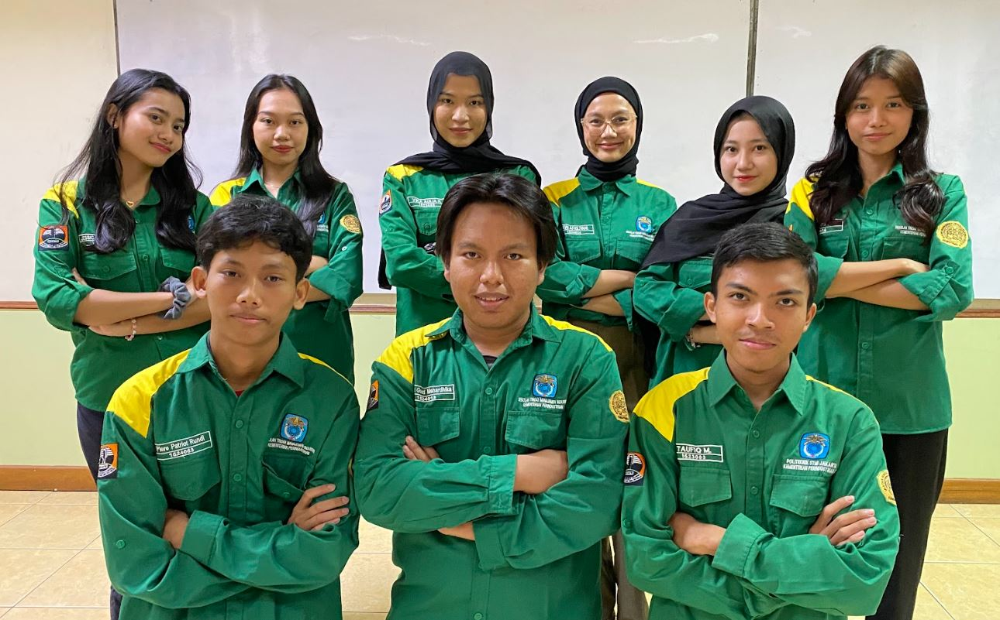

Ketua Umum
Budi Santoso
Wakil Ketua Umum
Siti Aminah
Sekretaris

Sekretaris Umum
Larashani Putri R

Staff Sekretaris Umum
Sabitah Al Salwa

Staff Sekretaris Umum
Kahla Humaira
Bendahara
Bendahara 1
Bunga Sarah Az-Zahra
Bendahara 2
Maritza Aulia Widdhianto
Bendahara 3
Novita Dwi Safitri
PSDM
10 Anggota

Pengembangan Sumber Daya Mahasiswa
P3M
10 Anggota

Pelatihan, Penelitian, dan Pengabdian Masyarakat
KWO
8 Anggota

Kewirausahaan dan Olahraga
INFOKOM
9 Anggota

Informasi dan Komunikasi
HAL
10 Anggota

Hubungan Alumni dan Lingkungan
Informasi Struktur
Struktur organisasi IMTEK periode 2024/2025 terdiri dari 5 departemen dengan total 55 anggota pengurus aktif.
2
Pimpinan
6
Sekretaris & Bendahara
5
Departemen
55
Total Anggota